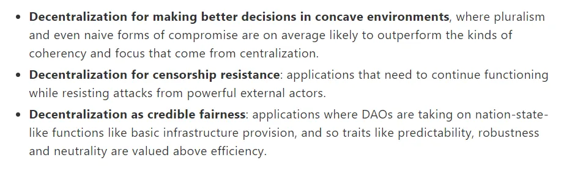
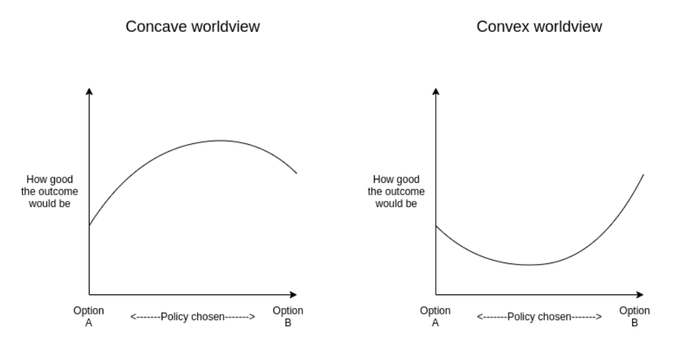
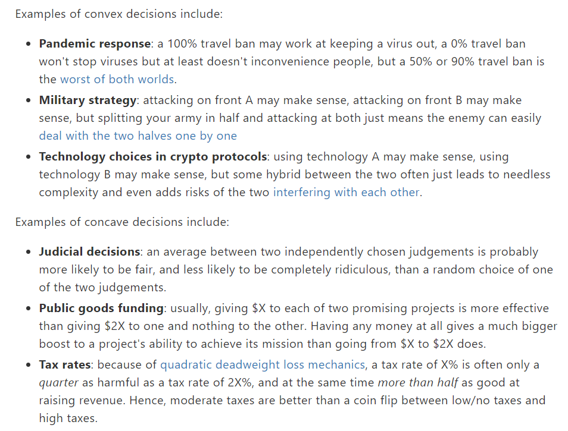
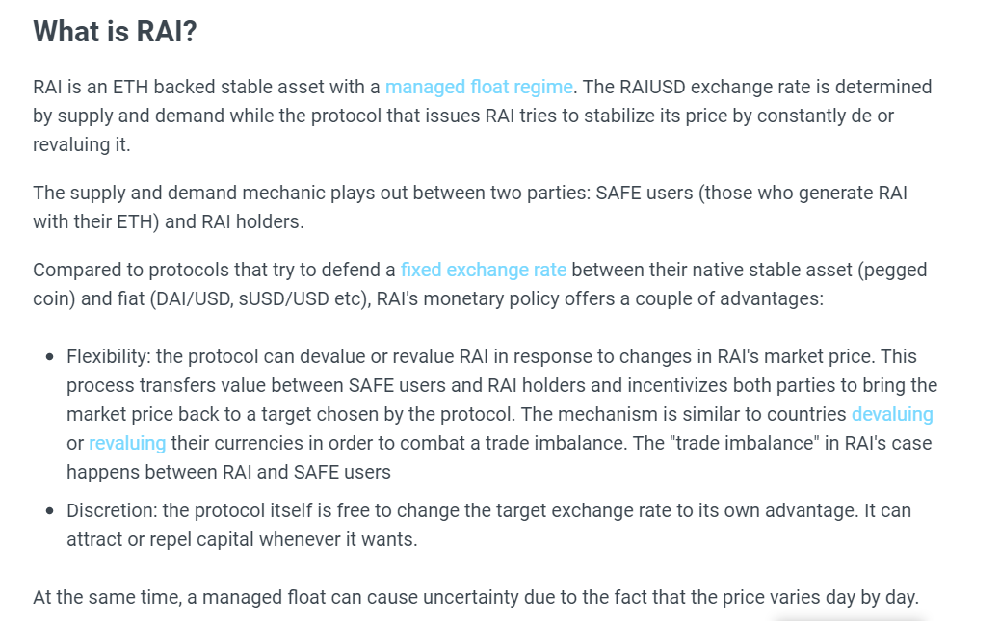
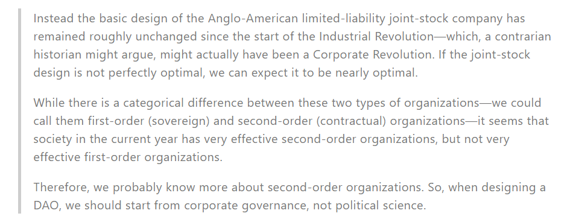
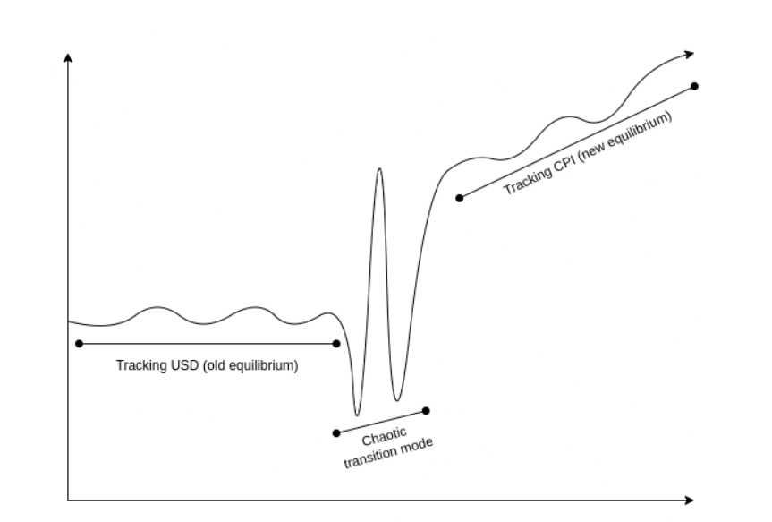

2022年9月20日，Vitalik在博客发表文章《DAOs are not corporations: where decentralization in autonomous organizations matters》，重提去中心化在DAO中的重要性问题，并对如何应用去中心化理念，给出了一些具体的建议和实例。
原文链接：https://vitalik.ca/general/2022/09/20/daos.html
在文章的最开始处，Vitalik给出了他认为三种应当去中心化的场景，分别是凹决策的场景（后面解释）、需要抗审查的场景、需要替代民族国家以保障可信的公平性的场景。
一 . 凹凸决策
Vitalik首先将决策场景分为两类，凸决策和凹决策，在凸决策中，两个极端选项本身都是好的，而在两个选项之间的折中选项是差的，这听起来有点像最优化问题取角点解的情况；在凹决策中则反过来，折中方案的效用最大。这里的凹凸，和数学上对函数凹凸性的定义一致。
Vitalik文章中对凹凸决策的图示
典型的凸决策比如防疫政策，严格防疫可以控制传播，保障安全，完全共存可以减少干预，恢复经济，但中间政策无法达成任何好处；典型的凹决策比如投资，两个项目各押一半比孤注一掷赌命来的更好。他还举了其他一些类似的例子。
然后，Vitalik以Ukraine DAO和Vita DAO的pod模式为例，展示以上原理的应用。Ukraine DAO把工作分成多个完全独立的pod，顶层治理负责创建新的pod并为其提供工作资金，但其工作细节则完全由pod内部决定，一般情况下由某个特定的pod leader领导，顶层治理并不对其干涉。
但这听起来非常像是传统的多层的公司架构，因此Vitalik解释这套架构的重点在于pod必须高度自治，不从顶层接受关于工作细节的命令，让顶层治理的低效尽可能少地影响工作。而要实现这一点，就要把顶层治理问题视作一个凹决策，尽可能在各种pod之间折中，以免错过某个方向和机会；而把基层工作问题视作一个凸决策，一旦确定核心理念和目标，就不再回头。
这其实有点类似古老的政治智慧，在朝廷里选人的时候疑人不用，一旦将在外则用人不疑。
二 . 抗审查和稳定性
这个段落，Vitalik认为需要抗审查的项目可能有两种运营模式，一种类似于SCI-HUB，他们有一个中心化的搜索引擎，由一个小型的技术团队维护其运作，通过经常性更换域名的方式躲避中心化审查。Vitalik把这种生存方式类比成鼹鼠。
第二种运营模式则以BitTorrent为代表，他们依靠完全的P2P网络实现去中心化，以在抗审查的同时维持整个体系的稳定性，不需要面对SCI-HUB时常更换域名那样的问题。
Vitalik认为，只有这类既需要长期逃避审查，又需要同时维持稳定性和安全性的DAO才对去中心化有必然要求，他举的例子是Maker DAO和Reflexer DAO，他们分别运营着稳定币DAI和RAI。
我自己之前也不了解这俩稳定币，也就仅仅是为了理解这篇文章而简单读了一下官网的介绍，而且网上讲这两个项目的好文章也太多了，所以我干脆就不讲了，直接上链接和截图吧。
我认为最简明的Maker DAO介绍：让大众读懂 Maker : DAI 稳定币的通俗解释
Maker DAO核心合约（抵押债务头寸合约）介绍：https://www.jianshu.com/p/324c6f7d3e91
Reflexer DAO官网：https://reflexer.finance/
RAI的基本介绍
三 . 自我监督需要
这是我认为Vitalik这篇文章中最有意义的部分，在这一段，他指出DAO有时候并不是需要反抗中心化政府，而是在提供公共物品、基础设施方面发挥和政府同样的职能，因此，DAO也面临在内部进行自我监管的问题。
做DAO也需要第二把枪
以算稳获取链外数据需要的神谕机、以太坊生态内的区块链法院Kleros、Optimism DAO为好项目提供的回溯性融资为例，Vitalik试图说明，即使我们真的相信Code is law，也总有一些场合，必须由人介入主观的判断。
以神谕机为例，无论智能合约写的多好，稳定币与USD的汇率总要由一个不在链上的主体提供，单个节点总是更容易被攻击，此时加上一层分散的间接寻址，用多个地址同时提供，取中位数，就更容易获得真实的汇率数据。
而Kleros则表现更明显，一些人已经在质疑，Kleros法院的裁决机制的公平性被一个持有超过总量25%代币的人所破坏，而Vitalik对此提出的解决意见是更均匀的分配代币，或者干脆不采用代币机制，更彻底地去中心化。
不过Vitalik并没有给出这种方案的具体细节。
引发Kleros公平性争议的#1170号报告：https://ipfs.kleros.io/ipfs/QmYr4e5jpNSjeUBw9BbM2G156eMmxcaMaknm17JHm8WP8G/1170-6a.pdf
四 . 柯蒂斯·雅尔文
在最后一段，Vitalik批评了美国哲学家柯蒂斯·雅尔文关于DAO的治理设计的问题，雅尔文的分析模型把制度设计分成两层，我大概直译一下，一层是主权的，一层是合同的，而雅尔文认为，DAO应该更多的学习第二层，也就是传统的公司治理模式。
雅尔文的原文
Vitalik对此的反驳有两点，第一点是，DAO在现实中经常提供货币、仲裁等服务，而这些服务的提供者通常应该是政府，而非企业，所以DAO的学习对象恰恰应该是第一层。
第二点是，雅尔文还提到一种"沙漏"模型，该模型结合了去中心化的校准和负责层以及一个集中式管理和执行的层面，但这已经承认DAO设计需要从主权层面中学习的至少与企业层面一样多。
关于这一点，Vitalik还做出了一个补充的判断，他认为，DAO和公司、政府一样需要解决继承（传递）问题，而且由于早期加密行业工作者采取的"挣够钱就退休"的模式，已经有一部分DAO面临了这种传递问题。
他认为公司和君主制都不能很好的解决问题，要么有一场激烈的斗争，比如九子夺嫡，要么几乎完全无法打破前任时期留下的特定习惯和特定风格，导致企业的活力不能长久，比如库克，当然，这个例子有我的个人偏见了。
当然，他也承认存在一些突发情况，比如假设有一天美元的世界货币地位突然崩溃，所有锚定美元的稳定币都将面对巨大的外生冲击，而他认为，在这些情况下，像罗马那样选举临时的独裁者可能是更好的选择，这时候，就要向公司乃至政府的制度设计学习。不过这并不是这篇文章的重点。
Vitalik设想的美元崩溃后RAI的内部风格变化
五 . 总结
以上是Vitalik这篇文章的全文摘要，其实也没怎么摘，原文也就四千多字而已。
现在不妨重新回看文章最初，Vitalik提到他写这篇文章的目的，他注意到最近有越来越多的声音讨论去中心化的必要性，乃至认为去中心化对于DAO的治理是无意义的，DAO应该更多地回归传统公司模式，以保持高效率和竞争力。（这样的声音当中显然也包括我一个）
因此，Vitalik是在提出三种特定的应用场景，论证去中心化存在的意义和必要性，凹凸决策的场景代表着去中心化有时能获得更高的效率，抗审查的场景代表着去中心化模式在某些需要稳定性和抗审查性的应用中的必要性，而最后的自我监督场景，则直接从逻辑上说明——在某些场景，尤其是比如为社会提供公共物品的场景里，效率不如公平来的重要。
我要特别解释的是，Vitalik没有任何表达"DAO应该更多推广"或者"DAO应该更多采用去中心化组织结构"之类观点的意思，相反，他多次在文章中强调有些场合是不需要使用DAO的，有些场合是不需要去中心化的，我从中看到了对去中心化审慎的使用态度和严谨的思考，我认为这是更重要的东西。
六 . 一个问题
从凹决策和凸决策，到稳定币链上数据和链外数据，再到DAO组织权力传承问题中的稳定情况和突发情况，似乎各处都在暗示一种可能——在一个组织中，公司的思路和DAO的思路，中心化和去中心化，是可以共存，可以在不同的领域相互配合，以实现更高的竞争力的。
如果真的是这样的话，做一个单独的DAO，是不是就不如直接改造某个现成的公司体制来的更好？
这个差距听起来不大，但是足足有革命党离维新派这么远。